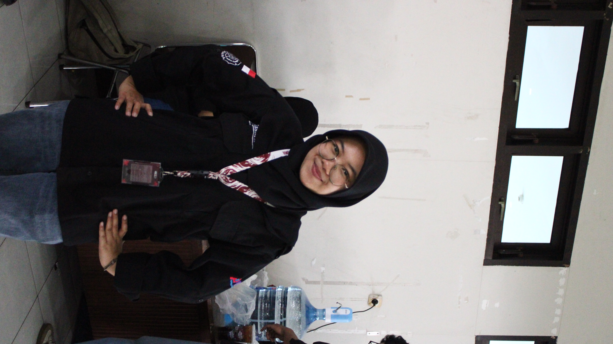

Gisma Dian Utami merupakan mahasiswa aktif Program Studi Pendidikan Teknik Informatika dan Komputer (PTIK) di Universitas Sebelas Maret (UNS), Surakarta. Saat ini, fokus akademisnya berpusat pada bidang teknologi informasi, khususnya dalam perancangan antarmuka pengguna (UI/UX) serta pengembangan desain website.
Selain fokus pada pengembangan website, ia juga memiliki minat yang besar dalam perancangan perangkat lunak interaktif. Ia tengah mengembangkan proyek game platformer dua dimensi menggunakan perangkat lunak Construct 2, yang mencakup pembuatan mekanik permainan hingga modifikasi aset visual dan karakter secara project tim.